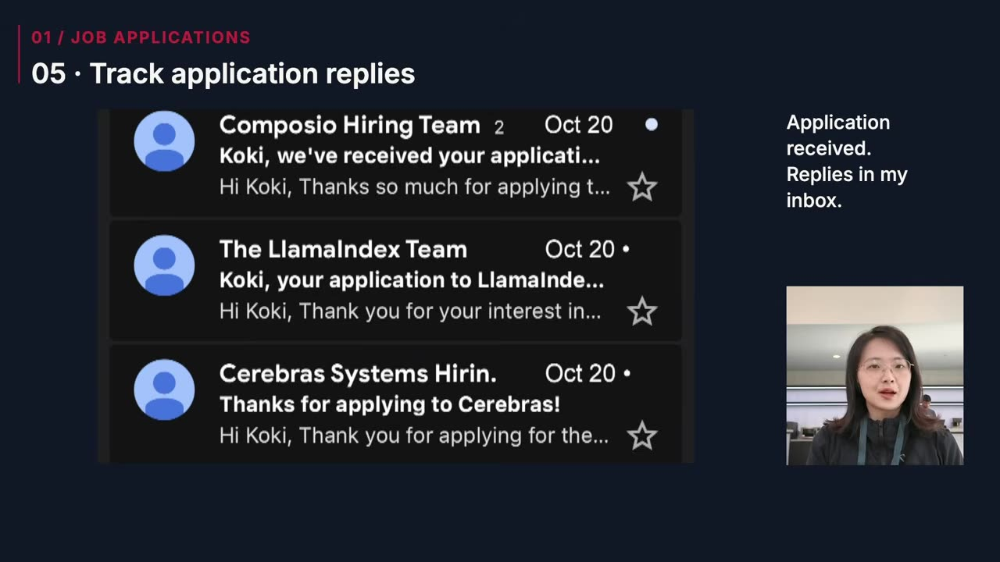
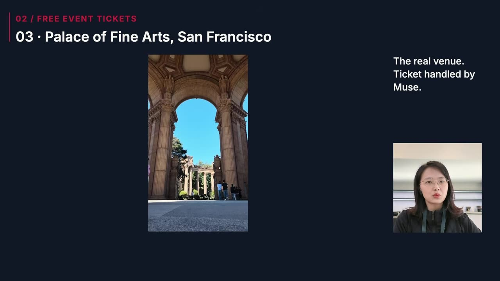
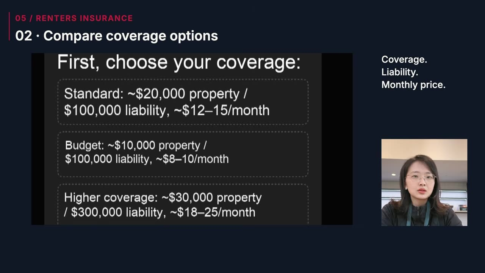
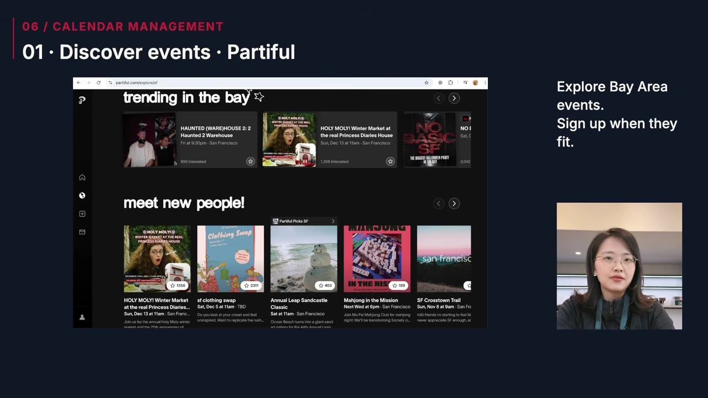
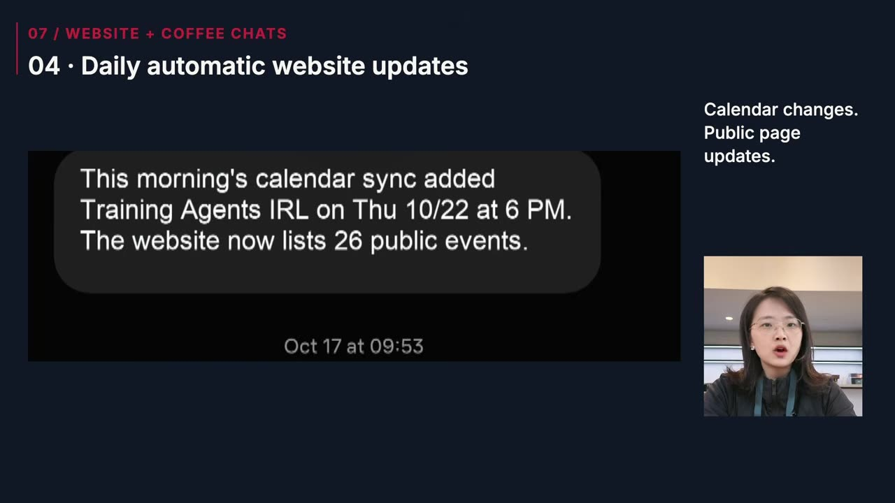

Personal Agent · 教程
Muse 怎么用：
7 个工作与生活的真实案例
我是 Koki，律师转型 AI Builder。用 Muse 快一个月，它已经彻底变成我的主力 AI 私人助理。这篇把视频里的 7 个真实案例整理成图文：从海投简历到让它自动维护我的个人网站。

- 求职：写简历、筛岗位、代填申请、追踪回复
- 免费拿到旧金山活动门票
- 帮我买一口平底锅
- 一整天的志愿者安排
- 租房保险：比价、投保、退保
- 日历管理：自动找活动、报名、排日程
- 个人网站 Coffee Chat 日历自动更新
01求职：从写简历到自动投递
我把 LinkedIn、作品和个人网站发给 Muse，让它帮我找工作。我的职业路径一直在变：法律 → AI 治理 → 动手做产品 → 社区与开发者关系（DevRel）。海投有多痛苦，我太清楚了。
Muse 先研究了我的公开资料，直接写出一份排版漂亮、可以直接用的简历。如果你对方向迷茫，也可以问它“什么岗位适合我”——AI 行业里像开发者关系、社区、Go-to-Market 这类岗位，其实在其他行业早就存在，对背景跨度大的人特别友好。
接着它去各大招聘平台筛选匹配岗位，打开每家公司的官方申请页代填表单。每次点“提交”前，它都会停下来把完整申请给我看。我逐一检查后说“全部发送”，它才提交。

之后它还设置了跟进：追踪回复，每天扫描新的匹配岗位并自动申请。以前自己海投，写邮件写到手指僵硬；现在一天可以投出上百份，收到回音的概率大大提高。

02免费拿到旧金山活动门票
我让 Muse 帮我找些有意思的活动。它找到一个“不能错过”的旧金山活动——但要付费。然后它自动找到了免费门票的优惠码，从找活动、拿码到报名全包了，帮我省下几百美元。
活动在旧金山艺术宫（Palace of Fine Arts），金门大桥旁最美的古典地标之一。我大概是现场唯一一个靠 AI 助理拿到免费票的人。

03帮我买一口平底锅
有点不好意思：我烧坏了朋友的平底锅，而我对锅一窍不通。我把原锅的信息给 Muse，要求只要送货上门。它在网上比价，给出一个短名单：哪款和原锅最匹配、各多少钱、多快能到——正是我需要做决定的三件事。它还主动找到了可用的折扣码。

我不需要懂产品，选了它推荐的那款付款，新锅直接送到了朋友家。
04让 AI 安排我的一整天
我做了个小实验：让 Muse 帮我找一个融入湾区 AI 生态的方式。它给我报名了 AWS 社区活动的志愿者，和组织者来回沟通邮件、把一切同步到日历、处理好各种细节。

它还调研了当天的演讲嘉宾和其他志愿者，给我做了背景简报，并建议值得一对一聊的人。活动前一晚还有讲者和志愿者的官方晚宴——我还没反应过来，它就帮我报上了（免费，而且真的很好吃）。第二天我只需按它的计划出发、到场、带好我负责的环节，认识了很多有趣的人。
05租房保险：比价、投保、退保
我实在不想啃冗长的表单、自己比较所有方案。Muse 把各个方案和套餐并排列出来，我直接选了最便宜的那个，每月只要 5 美元。

后来我不需要了，就直接告诉 Muse 要退保，它同样轻松地自己办完了。签证申请、租约表格、银行问题、报销申请这类文书工作，它也能帮忙。
06日历管理：我每天都在用
Muse 先了解我的背景、工作和适合我的活动类型，然后主动在 Luma、Meetup、Eventbrite 等平台搜索活动，找到合适的直接帮我报名。
我给它设了一个常驻任务：每天早上扫描收件箱里的活动邀请和确认邮件，放进日历。它会检查冲突，避免新活动和已有安排重叠；还会把地理位置相近的活动排在一起，让一天的行程更顺。

主办方回复或活动有变时，它会跟进；我不想去了，只要说一声，它就写邮件或在系统里取消报名。以前我要在五个不同的应用之间规划日程，现在一觉醒来，一天已经排好了。
以前在五个应用之间来回规划，现在一醒来，一天已经安排好了。
07个人网站的日历，交给 Muse 自动更新
这是我最喜欢的一个。作为博主，很多人问我怎么转行进入 AI，常约我 Coffee Chat。我需要一个地方展示我什么时候有空——但真实日历里有私人安排，不能整个公开。所以我的公开活动放在个人网站 湾区日程页。

以前每次更新都要手改代码，活动一变网站就得跟着改，我可不想每次都打开电脑跑编程工具。于是我让 Muse 连接我的代码仓库和日历，每天自动同步一次公开活动。

现在有人约 Coffee Chat，我只需发这个链接：他们能看到我会去哪些活动、在哪能线下见到我、什么时候有空。
写在最后
这 7 个案例只是冰山一角——我基本可以把日常琐事都交给 Muse，而且我确实这么做了。我会持续分享和个人 Agent 一起生活、工作的教程。
 在 YouTube 观看 ↗
在 YouTube 观看 ↗